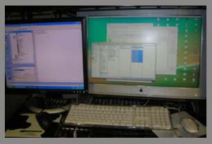

|
| StudiesCollaborationsPublications Training & Employment Equipment Tasks Grant Information |
|
Home About People Brochures Getting Here Contact Kids Corner
|
Computer Equipment Both of our stationary systems each have a 1.8 GHz dual Power PC G5 with a 580 GB hard drive and 3 GB of RAM (OS 10.4.11) for data collection and analysis. Stimulus presentation, experimental design, and behavioral data analysis is conducted on two 3 GHz dual Dell Dimension 2350s with 100 GB hard drives and 1 GB of RAM (Windows XP). Data collection and analysis on our portable system is conducted on a 1.8 GHz Dual-Core 15-inch MacBook Pro with a 100 GB hard drive and 2 GB of RAM (OS 10.4.11). A 1.8 GHz 14-inch Toshiba Tablet with a 80 GB hard drive and 2 GB of RAM running Windows XP controls stimulus presentation. Numerous systems are used for offline data analysis including one 2.0 GHz Dual-Core 13-inch MacBook, four 2.16 GHz Dual-Core 15-inch MacBook Pros, one 2.4 GHz Dual-Core 17-inch MacBook Pro, two 1.8 GHz dual Power PC G5s, two 1.2 GHz Power PC G4s, three 2.8 GHz dual Intel Pentium 4 Dell Optiplex 280s, and two 1.8 GHz dual Intel Pentium 4 Dell Dimension 2350s. Server backups are written using a dedicated 2.8 GHz Quad-Core Mac Pro with 2 GB of RAM attached to a 2 TB Raid-5 array and powered by Mac OS X Server. Secondary backups are written to a 1 TB Lacie Ethernet Big Disk powered by Windows XP Embedded and a third archive of each EEG session is written on DVD using numerous 16x single-layer SuperDrives. |
 |